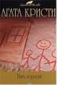

Пять поросят

Оба произведения, вошедшие в этот том, связаны с детскими стишками, помогающими Пуаро в расследовании. Роман "Раз, два - пряжку застегни" (выходивший в США под названием "Патриотические убийства") вновь втягивает великого сыщика в смертельные политические игры. В "Пяти поросятах" маленькому бельгийцу предстоит раскрыть убийство шестнадцатилетней давности.